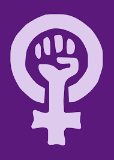

Estas mujeres no solo trabajaron arduamente para cumplir sus sueños sino tambien para ayudar a avanzar a todo
el genero femenino en la sociedad y terminar con los abusos a los cuales son sometidas las mujeres, algunos de sus
inconformidades eran las siguientes:
- La violencia de gerero: En decadas anteriores y aun en nuestra actualidad se ve la denigracion hacia la mujer
por la creencia de la fragiliadad cosa que es totalmente ofensiva.
- Igualdad de derechos: Dia tras dia se ven casos en los cuales no se les brinda el papel adecuado a los derechos
de las mujeres mayoritariamente a la hora de buscar trabajo.
- credito de trabajo: La mayor parte de las mujeres nombradas en esta pagina perdieron los creditos de sus inventos
ya que se creia que una mujer no tenia la capacidad psicologica para hacer inventos de tal magnitud.
- Proteccion: Cuando una mujer sufre una agresion fisica nunca se le ha brindado la proteccion necesaria para mantener
alejado a su agresor.
- La sociedad: Durante todas las epocas la sociedad a sido un obstaculo para grandes mujeres ya que aparte de no incluirlas
en nada se oponian a la diversidad cultural.
